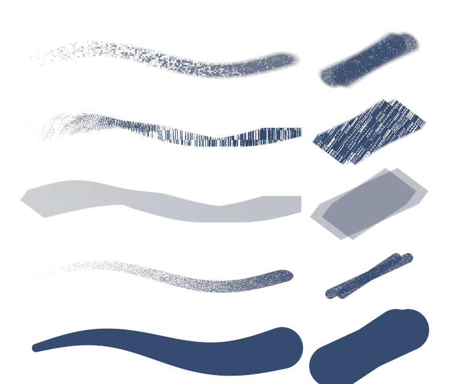

Actual GPU-rendered strokes from Sketchpad. The left column varies pressure and tilt; the right uses a mouse-style contact with two overlapping passes. Shown on white so the grain and transparency are visible.

Open the brush library to choose a preset. Each remembers its size and opacity during the session. Shift-drag size adjustment and the existing pen-only controls work with all five.
Marker layers deepen after lifting and drawing another pass. This is a translucent marker approximation; solvent blending, wet paint mixing and charcoal smudging are not simulated.
Research: Krita texture · Krita opacity/flow · Procreate brush settings · Copic nibs and layering